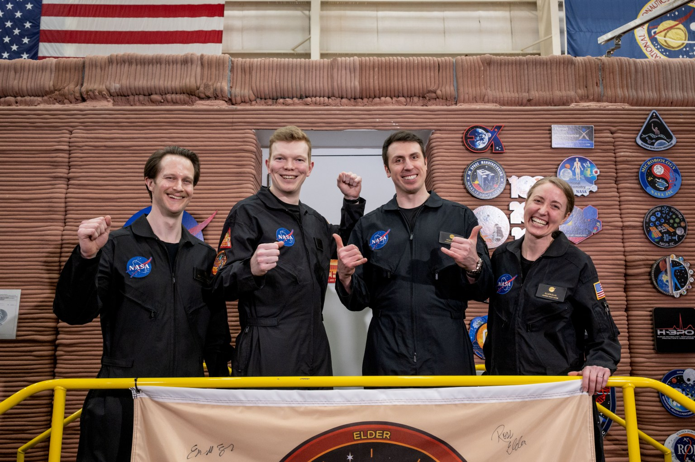

SECTION / 05
科技观察
从观测、模拟和实验里，辨认已经做到哪一步。
本栏今日无深度头条
五项进展各有一手说明，但同一研究尚缺互相独立的复核证据，不把多项简讯拼成深度。
本栏核至研究团队所属机构的一手发布，其中两条来自 MIT。研究结果为团队报告，本刊未复现实验、模型或观测分析；模拟、地面任务与未来用途分别标明。
THE BRIEFS / 短讯把消息，放回背景里。
五条短讯

CHAPEA 第二次任务乘员结束 378 天模拟后走出栖居舱，2026 年 10 月 31 日，休斯敦 · NASA/James Blair 来源条目 ↗ · 使用条款 ↗科技 / 01短讯
378 天之后，模拟火星的舱门打开了
四名志愿者于 10 月 31 日走出休斯敦的 Mars Dune Alpha 栖居舱，完成 NASA 第二次 CHAPEA 长期地面模拟任务。NASA 11 月 9 日署期报道回顾了这段 378 天的隔离生活：成员进行模拟火星行走、机器人操作、栖居舱维护、锻炼和作物种植。报道呈现成员回顾与任务完成情况，尚未给出完整健康或绩效分析；这是在地球上的模拟任务。
科技 / 02短讯
磁性波的左右旋转，有了新的切换办法
外加磁场可以改变材料的磁性状态，进而切换磁振子的旋向。美国 Ames 国家实验室 11 月 9 日介绍，团队在研究 Kagome 金属磁激发时，观察到不同材料中的两类磁振子会出现相交或相互作用、避开相交的差别。磁振子是材料中磁性运动的激发，研究者希望利用它传递信息。当前进展在材料与磁性机制层面，实际计算器件的能耗、可靠性和制造条件仍需验证。
科技 / 03短讯
那颗“消失”的行星，可能只是换了观测角度
TOI-2535 b 的凌星信号逐年变短、变浅，到 2026 年不再出现。UCLA 11 月 9 日公布的研究说明将原因指向一颗未被直接看到的邻近行星：相互引力使轨道倾斜，行星不再从观测者视线前方经过恒星。团队结合 TESS 观测与轨道计算作出这一解释。按团队测算，它要 30 到 50 年后才会再次从我们视线前方经过恒星。“消失”的是遮挡星光的信号；邻星与形成路径属于基于观测的推断，本刊未重新分析原始数据。
科技 / 04短讯
“别洒在电脑上”，机器人把旁边的手机也避开了
一杯咖啡穿过杂乱桌面的虚拟场景里，机器人收到“别洒在笔记本电脑上”的指令后，也绕开了附近手机。MIT 11 月 9 日介绍，MIT 与纽约大学团队的 FLEX 将自然语言反馈用于修改运动规划特征，让模型从具体指令推断更宽的意图。这里报告的是模拟场景中的表现；家庭实物机器人遇到液体、电器和人时的安全性，仍需另外验证。
科技 / 05短讯
沙堆和蛋白质，开始共用一种模拟架构
一堆沙子的滑落和蛋白质的运动，通常需要针对不同物理过程选择模拟工具。MIT 11 月 9 日介绍，WorldParticle 把对象表示为粒子，用统一神经网络预测它们后续的位置与物理属性，再纳入外力影响。团队展示了包括可变形物体、颗粒材料和蛋白质在内的六类现象。结果来自研究团队测试；软体机器人操作等更广用途仍是后续方向，本刊未复跑模型或比较计算成本。